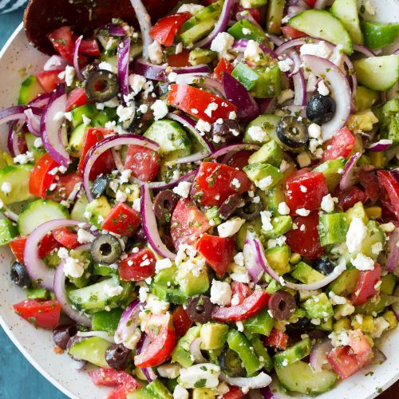

Greek Salad

Figure 1: A seriously scrumptious looking combination of delish!.
I could live off greek salad. It is literally a combination of all my favorite things. Not only does it combined all the best stuff, but the seperate ingedients become enhanced and elevated in this delish dish!
Ingredients
Greek Salad Dressing
- 6 Tbsp olive oil
- 1 1/2 Tbsp fresh lemon juice
- 1 Tbsp red wine vinegar
- 1 1/2 tsp minced garlic (1 large clove)
- 1 1/2 Tbsp finely minced fresh parsley
- 1 tsp dried oregano
- 3/4 tsp honey
- Salt, to taste
Salad
- 4 medium Roma tomatoes, diced (10 oz)
- 1 medium english cucumber, optionally peeled and sliced into half moons
- 1/2 small red onion, thinly sliced or diced, rinsed and drained
- 1 small green or yellow bell pepper, seeds and ribs removed, chopped
- 3/4 cup kalamata or black olives, drained and sliced
- 4 oz. crumbled feta cheese (about 1 cup)
- 1 medium avocado (OPTIONAL), diced
Steps
- Add all of the dressing ingredients to a small mixing bowl and whisk well to blend, season with salt to taste and store in refrigerator until ready to use.
- Add tomatoes, cucumber, onion, bell pepper, olives, avocado and feta to a salad bowl.
- Drizzle dressing over top and gently toss to evenly coat. Add dressing within a few minutes of serving for best results.
SOURCE: Cooking Classy